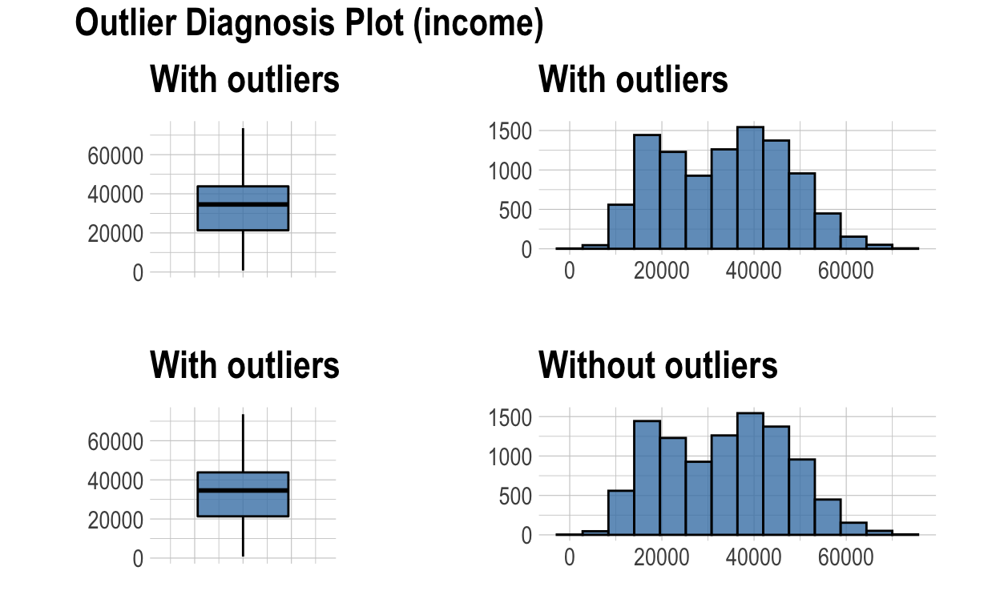
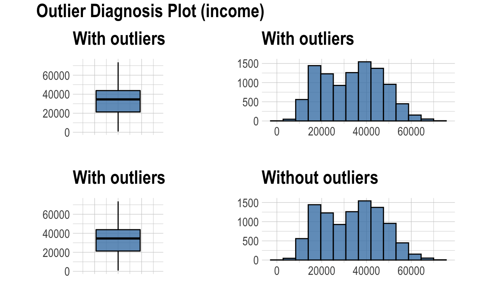
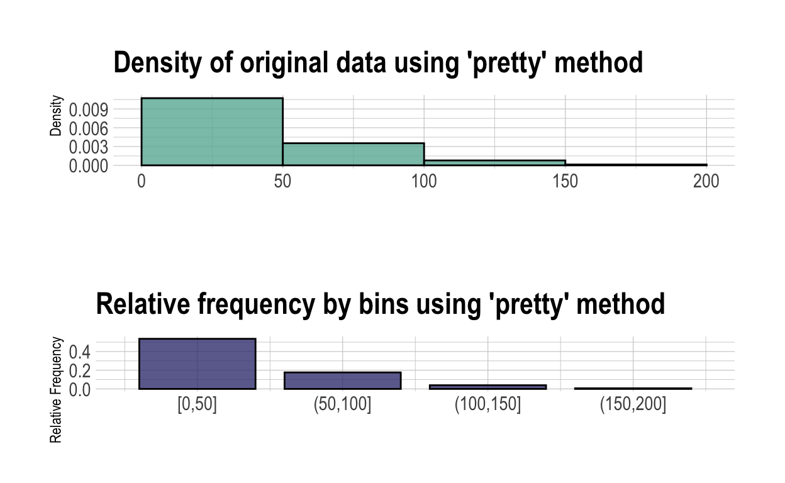
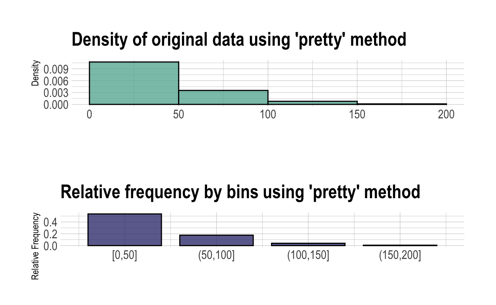
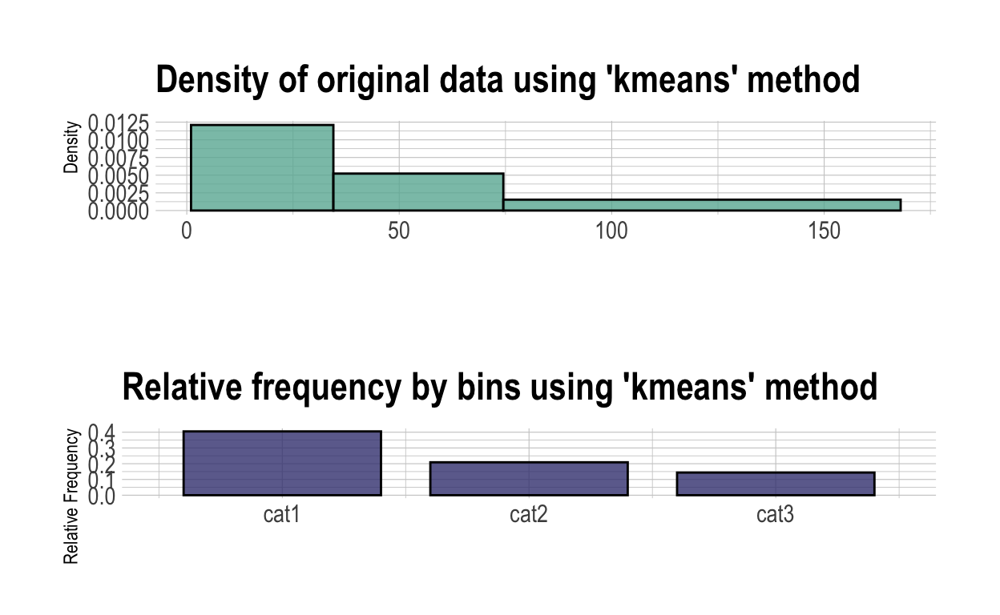

library(tidyverse) # for almost everything ;)
library(flextable) # for beautifying tables
library(dlookr) # for the main event of the evening ;)
citation("dlookr")
To cite package 'dlookr' in publications use:
Choonghyun Ryu (2021). dlookr: Tools for Data Diagnosis,
Exploration, Transformation. R package version 0.4.0.
https://CRAN.R-project.org/package=dlookr
A BibTeX entry for LaTeX users is
@Manual{,
title = {dlookr: Tools for Data Diagnosis, Exploration, Transformation},
author = {Choonghyun Ryu},
year = {2021},
note = {R package version 0.4.0},
url = {https://CRAN.R-project.org/package=dlookr},
}Chapter 1: DIAGNOSE your data
Generall diagnosis
We can think of diagnosing our data similarly to diagnosing a disease - we just try to figure out what is wrong. First of all, we can check whether a type of variables is correct. For instance, if we see a text or a factor for a clearly numeric variable - Temperature, we would be alarmed and would know that we need to fix it. Then, we can immediately see which variable has missing values and how many. Lastly, we can see how many unique values do we have in every variable, which is particularly useful for categorical variables, for instance, we could immediately see if some of values were misspelled and are now in several instead of only one category.
variables | types | missing_count | missing_percent | unique_count | unique_rate |
Ozone | integer | 37 | 24.2 | 68 | 0.444 |
Solar.R | integer | 7 | 4.6 | 118 | 0.771 |
Wind | numeric | 0 | 0.0 | 31 | 0.203 |
Temp | integer | 0 | 0.0 | 40 | 0.261 |
Month | integer | 0 | 0.0 | 5 | 0.033 |
Day | integer | 0 | 0.0 | 31 | 0.203 |
Categorical variables
Speaking of categorical variables: using diagnose_category() function we can diagnose all categorical variables from our dataset at once. Such diagnosis reveals names of categories, their counts and percentages and even ranking number from the biggest category to the smallest.
diagnose_category(diamonds) %>% flextable()
variables | levels | N | freq | ratio | rank |
cut | Ideal | 53,940 | 21,551 | 40.0 | 1 |
cut | Premium | 53,940 | 13,791 | 25.6 | 2 |
cut | Very Good | 53,940 | 12,082 | 22.4 | 3 |
cut | Good | 53,940 | 4,906 | 9.1 | 4 |
cut | Fair | 53,940 | 1,610 | 3.0 | 5 |
color | G | 53,940 | 11,292 | 20.9 | 1 |
color | E | 53,940 | 9,797 | 18.2 | 2 |
color | F | 53,940 | 9,542 | 17.7 | 3 |
color | H | 53,940 | 8,304 | 15.4 | 4 |
color | D | 53,940 | 6,775 | 12.6 | 5 |
color | I | 53,940 | 5,422 | 10.1 | 6 |
color | J | 53,940 | 2,808 | 5.2 | 7 |
clarity | SI1 | 53,940 | 13,065 | 24.2 | 1 |
clarity | VS2 | 53,940 | 12,258 | 22.7 | 2 |
clarity | SI2 | 53,940 | 9,194 | 17.0 | 3 |
clarity | VS1 | 53,940 | 8,171 | 15.1 | 4 |
clarity | VVS2 | 53,940 | 5,066 | 9.4 | 5 |
clarity | VVS1 | 53,940 | 3,655 | 6.8 | 6 |
clarity | IF | 53,940 | 1,790 | 3.3 | 7 |
clarity | I1 | 53,940 | 741 | 1.4 | 8 |
Numeric variables
Diagnosing all numeric variables at once is similarly easy. diagnose_numeric() function calculates not only most common descriptive statistics, like minimum, first Quartile, average, median, third Quartile and maximum, but also gives you the number of zeros, negative values and even the number of potential outliers for every numeric variable.
diagnose_numeric(diamonds) %>% flextable()
variables | min | Q1 | mean | median | Q3 | max | zero | minus | outlier |
carat | 0.2 | 0.4 | 0.8 | 0.7 | 1.0 | 5 | 0 | 0 | 1,889 |
depth | 43.0 | 61.0 | 61.7 | 61.8 | 62.5 | 79 | 0 | 0 | 2,545 |
table | 43.0 | 56.0 | 57.5 | 57.0 | 59.0 | 95 | 0 | 0 | 605 |
price | 326.0 | 950.0 | 3,932.8 | 2,401.0 | 5,324.2 | 18,823 | 0 | 0 | 3,538 |
x | 0.0 | 4.7 | 5.7 | 5.7 | 6.5 | 11 | 8 | 0 | 32 |
y | 0.0 | 4.7 | 5.7 | 5.7 | 6.5 | 59 | 7 | 0 | 29 |
z | 0.0 | 2.9 | 3.5 | 3.5 | 4.0 | 32 | 20 | 0 | 49 |
As mentioned before, {dlookr} happily collaborates with two of the most used {tidyverse} packages: {dplyr} and {ggplot2}, which is simply amazing!
diagnose_numeric(diamonds) %>%
filter(minus > 0 | zero > 0) %>%
select(variables, median, zero:outlier) %>%
flextable()
variables | median | zero | minus | outlier |
x | 5.7 | 8 | 0 | 32 |
y | 5.7 | 7 | 0 | 29 |
z | 3.5 | 20 | 0 | 49 |
Outliers
By the way outliers, how would you diagnose them? Of coarse you would count them and get their percentages in every variable, right? Sure! Well {dlookr} does it for you. Moreover, if calculate three different averages: the mean of every variable with outliers, without outliers and the mean of the outliers themselves. So, you can see how strong the influence of outliers for every variable is. For instance the variable “depth” in “diamonds” data has over 2500 outliers. That’s a lot! However, the means with and without outliers are almost identical. Besides, the average of the outliers themselves is very similar to the original average of the whole data. In contrast, the variable “price” with over 3500 outliers is heavily influenced by them. The average of the outliers is almost 5 times higher, than the average without them. That’s deep enough diagnoses of outliers already. And if that weren’t enough, {dlookr} can visualize the distribution of data with and without outliers. Let’s plot them!
diagnose_outlier(diamonds) %>% flextable()
variables | outliers_cnt | outliers_ratio | outliers_mean | with_mean | without_mean |
carat | 1,889 | 3.502 | 2.2 | 0.8 | 0.75 |
depth | 2,545 | 4.718 | 61.2 | 61.7 | 61.78 |
table | 605 | 1.122 | 64.8 | 57.5 | 57.37 |
price | 3,538 | 6.559 | 14,944.8 | 3,932.8 | 3,159.81 |
x | 32 | 0.059 | 7.2 | 5.7 | 5.73 |
y | 29 | 0.054 | 9.8 | 5.7 | 5.73 |
z | 49 | 0.091 | 4.1 | 3.5 | 3.54 |
First of all we’ll quickly find the variables (or columns) with outliers using find_outliers() function. It gives you the index of the column. For example in “iris” dataset the second column contains outliers. Using the argument index = FALSE provides the name of the column, so that you can select only columns with outliers and plot them by a simple plot_outlier() function. If we don’t specify any columns, plot_outlier() function will plot each numeric variable from your dataset. This plot displays the distribution of data with and without outliers in the form of box plots and histograms, so that we directly see how our data changes if we remove outliers.
find_outliers(iris)
[1] 2find_outliers(iris, index = F)
[1] "Sepal.Width"iris %>%
select(Sepal.Width) %>%
plot_outlier()

plot_outlier(ISLR::Default)
 

If we remove outliers, they kind of become missing values, despite the fact that they weren’t missing in the beginning. And if we want to diagnose our data properly, we need to deal with missing values too. And as always, the best way to deal with any data problem is to visualize it.
Missing Values
Well amazingly, {dlookr} not only can visualize outliers, but can also do this in three different ways. The first one - is the Pareto chart.
plot_na_pareto(airquality)

In a Pareto Chart counts and proportions of missing values are represented in descending order by bars, and the cumulative total is represented by the line. It even tells you what the amount of missing values means, namely, missing around 24% of observations is still OK, while missing more then 40% of values would be bad. If you have a lot of variable and wanna display only the ones with missing values, use only_na = TRUE argument. The only problem with pareto plot is that we don’t know whether missing values in different columns belong to the same observation.
airquality %>%
plot_na_pareto(only_na = TRUE)

airquality %>%
plot_na_pareto(only_na = TRUE, plot = FALSE) %>% flextable()
variable | frequencies | ratio | grade | cumulative |
Ozone | 37 | 0.242 | OK | 84 |
Solar.R | 7 | 0.046 | Good | 100 |
But that’s where the second type of visualization of missing values comes into play - plot_na_hclust() - which shows you how missing values are distributed and whether there are overlapping of variables between then. The only which concerns me here was that overlapping itself could be hard to see if we’ll get many variables with missing values, some with few and some with a lot of missing values.
plot_na_hclust(airquality)

Third method of plotting missing values solves this problem. plot_na_intersect() function visualizes the combinations of missing value across columns. The x-axis shows the variables with missing values and the counts of missing values on the top of the plot as a bar graph. The y-axis represents the combination of variables and their frequencies. For instance, we see, that two of the observations are missing in both variables. We can also display complete cases if we want to.
plot_na_intersect(airquality)

Reporting
diagnose_report() function combines most of what we just learned (but not all!) into one PDF or HTML document in seconds. Just run the line of code below and explore it. But the way - exploring - is the second thing {dlookr} package absolutely nails! So, let’s get straight to it.
diagnose_report(airquality) # pdf or html
Chapter 2: EXPLORE your data
Describtive statistics
variable | n | na | mean | sd | se_mean | IQR | skewness | kurtosis | p00 | p01 | p05 | p10 | p20 | p25 | p30 | p40 | p50 | p60 | p70 | p75 | p80 | p90 | p95 | p99 | p100 |
Sepal.Length | 150 | 0 | 5.8 | 0.83 | 0.068 | 1.3 | 0.31 | -0.55 | 4.3 | 4.4 | 4.6 | 4.8 | 5.0 | 5.1 | 5.3 | 5.6 | 5.8 | 6.1 | 6.3 | 6.4 | 6.5 | 6.9 | 7.3 | 7.7 | 7.9 |
Sepal.Width | 150 | 0 | 3.1 | 0.44 | 0.036 | 0.5 | 0.32 | 0.23 | 2.0 | 2.2 | 2.3 | 2.5 | 2.7 | 2.8 | 2.8 | 3.0 | 3.0 | 3.1 | 3.2 | 3.3 | 3.4 | 3.6 | 3.8 | 4.2 | 4.4 |
Petal.Length | 150 | 0 | 3.8 | 1.77 | 0.144 | 3.5 | -0.27 | -1.40 | 1.0 | 1.1 | 1.3 | 1.4 | 1.5 | 1.6 | 1.7 | 3.9 | 4.3 | 4.6 | 5.0 | 5.1 | 5.3 | 5.8 | 6.1 | 6.7 | 6.9 |
Petal.Width | 150 | 0 | 1.2 | 0.76 | 0.062 | 1.5 | -0.10 | -1.34 | 0.1 | 0.1 | 0.2 | 0.2 | 0.2 | 0.3 | 0.4 | 1.2 | 1.3 | 1.5 | 1.8 | 1.8 | 1.9 | 2.2 | 2.3 | 2.5 | 2.5 |
# selected numeric variables
# describe(airquality, Ozone, Temp)
variable | Species | n | na | mean | sd | se_mean | IQR | skewness | kurtosis | p00 | p01 | p05 | p10 | p20 | p25 | p30 | p40 | p50 | p60 | p70 | p75 | p80 | p90 | p95 | p99 | p100 |
Sepal.Length | setosa | 50 | 0 | 5.0 | 0.35 | 0.050 | 0.40 | 0.12 | -0.253 | 4.3 | 4.3 | 4.4 | 4.6 | 4.7 | 4.8 | 4.8 | 5.0 | 5.0 | 5.1 | 5.1 | 5.2 | 5.3 | 5.4 | 5.6 | 5.8 | 5.8 |
Sepal.Length | versicolor | 50 | 0 | 5.9 | 0.52 | 0.073 | 0.70 | 0.11 | -0.533 | 4.9 | 4.9 | 5.0 | 5.4 | 5.5 | 5.6 | 5.6 | 5.7 | 5.9 | 6.0 | 6.2 | 6.3 | 6.4 | 6.7 | 6.8 | 7.0 | 7.0 |
Sepal.Length | virginica | 50 | 0 | 6.6 | 0.64 | 0.090 | 0.67 | 0.12 | 0.033 | 4.9 | 5.2 | 5.7 | 5.8 | 6.1 | 6.2 | 6.3 | 6.4 | 6.5 | 6.7 | 6.8 | 6.9 | 7.2 | 7.6 | 7.7 | 7.8 | 7.9 |
Normality Test
vars | statistic | p_value | sample |
Sepal.Length | 0.98 | 1.0e-02 | 150 |
Sepal.Width | 0.98 | 1.0e-01 | 150 |
Petal.Length | 0.88 | 7.4e-10 | 150 |
Petal.Width | 0.90 | 1.7e-08 | 150 |
normality() function performs a Shapiro-Wilk normality test on ALL numeric variables at once, if non are specified. When the number of observations is greater than 5000, then 5000 observations are randomly selected. The ability of this function to work with {dplyr} helps here too, since we always need to check normality of groups, not only of the whole variable. The code you see below consists of just 4 words, but conducts 12 normality tests, namely for 3 categories in 4 numeric variables. Now, imagine a dataset with 100 numeric variables and 100 categories you wanna check the normality for. It would still take only 4 words, but would conduct 10.000 tests.
variable | Species | statistic | p_value | sample |
Sepal.Length | setosa | 0.98 | 4.6e-01 | 50 |
Sepal.Length | versicolor | 0.98 | 4.6e-01 | 50 |
Sepal.Length | virginica | 0.97 | 2.6e-01 | 50 |
Sepal.Width | setosa | 0.97 | 2.7e-01 | 50 |
Sepal.Width | versicolor | 0.97 | 3.4e-01 | 50 |
Sepal.Width | virginica | 0.97 | 1.8e-01 | 50 |
Petal.Length | setosa | 0.95 | 5.5e-02 | 50 |
Petal.Length | versicolor | 0.97 | 1.6e-01 | 50 |
Petal.Length | virginica | 0.96 | 1.1e-01 | 50 |
Petal.Width | setosa | 0.80 | 8.7e-07 | 50 |
Petal.Width | versicolor | 0.95 | 2.7e-02 | 50 |
Petal.Width | virginica | 0.96 | 8.7e-02 | 50 |
For comparison, here is the simplest example of the code I used for the same task before {dlookr}. Here I would need to:
- transform the data first
- “nest” the values
- use “map” function two times, which has nothing to do with “normality”
- use strange symbols like “~” (tilde) and “.x$”
- “tidy” up the result
- “unnest” the result and even
- get rid of some useless columns to get the same table we have seen above
Don’t get me wrong, I am a huge fan of {dplyr}! But some tasks can be simplified even beyond {dplyr} and that’s just the beautiful.
iris %>%
pivot_longer(cols = 1:4) %>%
nest(value) %>%
mutate(
test = map(data, ~ shapiro.test(.x$value)),
tidied = map(test, broom::tidy)
) %>%
unnest(tidied, .drop = TRUE) %>%
select(-data, -test) %>%
flextable() %>%
width(j = "method", width = 2)
Species | name | statistic | p.value | method |
setosa | Sepal.Length | 0.98 | 4.6e-01 | Shapiro-Wilk normality test |
setosa | Sepal.Width | 0.97 | 2.7e-01 | Shapiro-Wilk normality test |
setosa | Petal.Length | 0.95 | 5.5e-02 | Shapiro-Wilk normality test |
setosa | Petal.Width | 0.80 | 8.7e-07 | Shapiro-Wilk normality test |
versicolor | Sepal.Length | 0.98 | 4.6e-01 | Shapiro-Wilk normality test |
versicolor | Sepal.Width | 0.97 | 3.4e-01 | Shapiro-Wilk normality test |
versicolor | Petal.Length | 0.97 | 1.6e-01 | Shapiro-Wilk normality test |
versicolor | Petal.Width | 0.95 | 2.7e-02 | Shapiro-Wilk normality test |
virginica | Sepal.Length | 0.97 | 2.6e-01 | Shapiro-Wilk normality test |
virginica | Sepal.Width | 0.97 | 1.8e-01 | Shapiro-Wilk normality test |
virginica | Petal.Length | 0.96 | 1.1e-01 | Shapiro-Wilk normality test |
virginica | Petal.Width | 0.96 | 8.7e-02 | Shapiro-Wilk normality test |
Moreover, plot_normality() function visualizes the normality of numeric data and two most common transformations of data in case the normality assumption was not met. Particularly, we see:
- Histogram of original data
- Q-Q plot of original data
- Histogram of log transformed data and finally
- Histogram of square root transformed data
Now we see whether transformation brings something or not.
airquality %>%
plot_normality(Ozone)

Correlation
In order to quickly check the relationship between numeric variables we can use correlate() function. If we don’t specify any target variables, Pearson’s correlation between ALL variables will be calculated pairwisely. But let’s have a look at only one variable - Ozone. Nice, but plot_correlate() function is even more useful, because it visualizes these relationships. We can of course determine the method of calculations, be it a default “pearson”, or a non-parametric “kendall” or “spearman” correlation. The shape of each subplot shows the strength of the correlation, while the color shows the direction, where blue is positive and red is negative correlation.
correlate(airquality, Ozone)
# A tibble: 5 x 3
var1 var2 coef_corr
<fct> <fct> <dbl>
1 Ozone Solar.R 0.348
2 Ozone Wind -0.602
3 Ozone Temp 0.698
4 Ozone Month 0.165
5 Ozone Day -0.0132plot_correlate(iris, method = "kendall")

Here again, adding some {dplyr} code, we can check as many correlations as we want.
diamonds %>%
filter(cut %in% c("Premium", "Ideal")) %>%
group_by(cut) %>%
plot_correlate(method = "spearman")


Relation
{dlookr} can also check out other kinds of relationships between two particular, for example between two categorical, variables. You just need to specify the response (or target) variable with a function target_by() and the predictor with the function relate().
categorical to categorical
For instance, the influence of predictor “clarity” on our target “cut” in “diamonds” dataset, we’ll be analyzed by a Chi-Square Test for independence. Plotting them will produce a mosaic plot with frequencies of both categorical variables.
diamonds %>%
target_by(cut) %>% # similar to "group_by" only for one variable
relate(clarity) %>%
summary()
Call: xtabs(formula = formula_str, data = data, addNA = TRUE)
Number of cases in table: 53940
Number of factors: 2
Test for independence of all factors:
Chisq = 4391, df = 28, p-value = 0
categorical to numeric
If our target variable is categorical and our predictor is numeric, simple descriptive stats and density plots will be displayed.

numeric to categorical
If the response variable is numeric, while the predictor is categorical or numeric, simple linear regression will be applied. Using summary() or tab_model() would give you the model output, which coefficients and p-values. Plotting the categorical predictor would produce a pretty boring box-plot, while visualization of the numeric variable would produce a nice model fit with with confidence intervals.
Call:
lm(formula = formula(formula_str), data = data)
Residuals:
Min 1Q Median 3Q Max
-1.6880 -0.3285 -0.0060 0.3120 1.3120
Coefficients:
Estimate Std. Error t value Pr(>|t|)
(Intercept) 5.0060 0.0728 68.762 < 2e-16 ***
Speciesversicolor 0.9300 0.1030 9.033 8.77e-16 ***
Speciesvirginica 1.5820 0.1030 15.366 < 2e-16 ***
---
Signif. codes: 0 '***' 0.001 '**' 0.01 '*' 0.05 '.' 0.1 ' ' 1
Residual standard error: 0.5148 on 147 degrees of freedom
Multiple R-squared: 0.6187, Adjusted R-squared: 0.6135
F-statistic: 119.3 on 2 and 147 DF, p-value: < 2.2e-16
numeric to numeric
| Ozone | |||
|---|---|---|---|
| Predictors | Estimates | CI | p |
| (Intercept) | -147.00 | -183.22 – -110.77 | <0.001 |
| Temp | 2.43 | 1.97 – 2.89 | <0.001 |
| Observations | 116 | ||
| R2 / R2 adjusted | 0.488 / 0.483 | ||

Reporting
eda_report() will produce a report, similar to the diagnose report. However, if we here specify the target variable, we’ll get much richer report. Let’s use the HTML output format this time.
airquality %>%
eda_report(
target = Temp,
output_format = "html",
output_file = "EDA_airquality.html")
Chapter 3: TRANSFORM your data
This chapter is my favorite! To be honest with you, missing values and outliers are like parasites on my data and I just wanna get rid of them. Now, thanks to {dlookr}, I can do it easily and very effective! Check this out.
Imputation
Imputation simply means replacing a missing value with a value which makes sense. There are two kinds of imputation:
1. Predictor is numeric
- imputation with a single value, like
- mean
- median or
- mode, or
- imputation with by a machine learning algorithm, like
- knn - K-nearest neighbors
- rpart - Recursive Partitioning and Regression Trees or
- mice - Multivariate Imputation by Chained Equations (random seed must be set)
imputate_na() function needs 4 arguments: - data - name of the variable with missing values - name of the predictor variable and - the method of imputation
Let’s use the “airquality” dataset again, and fill out 37 missing values in the variable “Ozone” via the variable “Temperature” using the average as a method of imputation.
Just run all the methods available and peak the best for your particular dataset. Because there is no “best” imputation method, just the best method for your individual data. imputate_na() support both numeric and categorical variables, and supports the following method. If we sage the output of the function imputate_na() in some meaningful name, like “bla”, we can first have a look at the summary. The summary compares some metrix of the Original and New dataset, before and after the imputation accordingly. Particularly, we see that the standard deviation and the standard error got smaller, which is a good sign! Secondly, let’s plot both datasets and compare them. The plot reveals that distribution of a new dataset changed dramatically, which is not a good sing at all, because we just made up some data which is far away from the original data, and the original data is the best guess on reality we have.
So, does imputation makes sense at all? Well, let’s use one of the machine learning methods, for example K-nearest neighbors. This plot looks much better, because the distribution did not change much, but some aspects of it were a bit more emphasized. But does this mean, that imputation by a single value is useless? I’ve heard this opinion before. But I found that usefulness of the imputation strongly depends on the dataset and the best way to use it in my opinion is just to compare all imputation methods with each other and take the best, even if it is a single value method. If we run this whole chunk of code, we’ll be able to visually choose among methods. For instance, “rpart” - Recursive Partitioning and Regression Trees, does the best job for “Ozone” columns in “airquality” dataset.
Needless to say, the plots can be pimped with some ggplot2 syntax.
# mean
bla <- imputate_na(airquality, xvar = Ozone, yvar = Solar.R, method = "mean")
#summary(bla)
plot(bla)

# median
blup <- imputate_na(airquality, Ozone, Temp, method = "median")
# summary(blup)
plot(blup)+theme_minimal()
# “knn” : K-nearest neighbors
blap <- imputate_na(airquality, Ozone, Temp, method = "knn")
#summary(blap)
plot(blap)

# “rpart” : Recursive Partitioning and Regression Trees
blah <- imputate_na(airquality, Ozone, Temp, method = "rpart")
#summary(blah)
plot(blah)+theme_classic()+theme(legend.position = "top")

# “mice” : Multivariate Imputation by Chained Equations
blup <- imputate_na(airquality, Ozone, Temp, method = "mice", seed = 999)
iter imp variable
1 1 Ozone Solar.R
1 2 Ozone Solar.R
1 3 Ozone Solar.R
1 4 Ozone Solar.R
1 5 Ozone Solar.R
2 1 Ozone Solar.R
2 2 Ozone Solar.R
2 3 Ozone Solar.R
2 4 Ozone Solar.R
2 5 Ozone Solar.R
3 1 Ozone Solar.R
3 2 Ozone Solar.R
3 3 Ozone Solar.R
3 4 Ozone Solar.R
3 5 Ozone Solar.R
4 1 Ozone Solar.R
4 2 Ozone Solar.R
4 3 Ozone Solar.R
4 4 Ozone Solar.R
4 5 Ozone Solar.R
5 1 Ozone Solar.R
5 2 Ozone Solar.R
5 3 Ozone Solar.R
5 4 Ozone Solar.R
5 5 Ozone Solar.R# summary(blup)
plot(blup)+theme_void()

2. Predictor is categorical variable
Only three methods are available for imputation of categorical variables:
- mode - mode
- rpart - Recursive Partitioning and Regression Trees
- mice - Multivariate Imputation by Chained Equations (random seed must be set)
Let’s take the diamonds dataset, make it a bit smaller, add some NAs and use the mice imputation. The plot of the results compares the frequencies of each category, so that we can see which values were imputed. The summary command would give you the exact counts and proportions of categories before and after imputation. And already familiar plot_na_pareto() function ensures that we have missing values in the old “cut” variable and no missing values in the “new_cut” variable.
d <- diamonds %>%
sample_n(1000)
d[sample(seq(NROW(d)), 50), "cut"] <- NA
d2 <- imputate_na(d, cut, price, method = "mice", seed = 999)
iter imp variable
1 1 cut
1 2 cut
1 3 cut
1 4 cut
1 5 cut
2 1 cut
2 2 cut
2 3 cut
2 4 cut
2 5 cut
3 1 cut
3 2 cut
3 3 cut
3 4 cut
3 5 cut
4 1 cut
4 2 cut
4 3 cut
4 4 cut
4 5 cut
5 1 cut
5 2 cut
5 3 cut
5 4 cut
5 5 cutplot(d2)

summary(d2)
* Impute missing values based on Multivariate Imputation by Chained Equations
- method : mice
- random seed : 999
* Information of Imputation (before vs after)
original imputation original_percent imputation_percent
Fair 31 32 3.1 3.2
Good 86 90 8.6 9.0
Ideal 384 410 38.4 41.0
Premium 243 253 24.3 25.3
Very Good 206 215 20.6 21.5
<NA> 50 0 5.0 0.0d %>%
mutate(new_cut = d2) %>%
select(cut, new_cut) %>%
plot_na_pareto()

3. Imputation of outliers
We have seen that {dlookr} package can effectively find outliers and impute missing values. If the outliers are nasty, they can be treated like missing values. Therefore, if desired, the outliers can be easily replaced by the imputate_outlier() function. This function supports the following imputation methods:
- mean
- median
- mode and
- capping - which imputes the upper outliers with 95th percentile, and the bottom outliers with 5th percentile. Here, I would also recommend to compare all 4 methods before deciding which method is the best. And if we look at the plots, I thing a simple average is the best.
bla <- imputate_outlier(diamonds, carat, method = "mean")
plot(bla)

bla <- imputate_outlier(diamonds, carat, method = "median")
plot(bla)

bla <- imputate_outlier(diamonds, carat, method = "mode")
plot(bla)

bla <- imputate_outlier(diamonds, carat, method = "capping")
plot(bla)

Binning
binning() transforms a numeric variable into a categorical one. The following types of binning are supported:
- quantile, which categorizes using quantiles
- equal - categorizes to have equal length segments
- pretty - categorizes into moderately good segments (whatever it it :)
- kmeans - categorization using K-means clustering
- bclust - categorization using clustering technique with bagging, where bagging is an abbreviation for Bootstrap Aggregating - a machine learning meta-algorithm designed to improve predictive performance.
The bclust sound most fancy, so, let’s try this out first. The distribution of the Ozone variable provides 3 intuitive groups:
- the parabola from 0 to 60
- short flat area from 60 to 80 and
- steady decline till the end of the plot
thus, let’s set the number of bins to 3. Plotting the result shows that our first intuition was correct, the parabola was singled out into a category. However, the third category is kind of small, and has only 7 observations, which we can see using summary() command. And we wanna know the exact numbers were the borders of categories were drawn, don’t use argument “labels” in the binning() command:
DataExplorer::plot_density(airquality$Ozone)

# the fanciest one
bin <- binning(airquality$Ozone, type = "bclust", nbins = 3,
labels = c("cat1", "cat2", "cat3"))
plot(bin)

summary(bin)
levels freq rate
1 cat1 83 0.542483660
2 cat2 32 0.209150327
3 cat3 1 0.006535948
4 <NA> 37 0.241830065binning(airquality$Ozone, type = "bclust", nbins = 3)
binned type: bclust
number of bins: 3
x
[1,55.5] (55.5,152] (152,168] <NA>
83 32 1 37 If we check out all the other categorizations, we can choose the one we feel the best about. I would take the kmeans, because it has relatively similar counts of data in every category, while still describing the distribution with three traits of the plot we have seen, namely parabola at the beginning of the plot, plateau in the middle and decline till the end.

 


Using a simple {dplyr} syntax we can easily add a new categorized Ozone variable into our dataset.
airquality %>%
mutate(
binned_Ozone = binning(airquality$Ozone, type = "quantile", nbins = 3, labels = c("cat1", "cat2", "cat3"))
) %>% head() %>% flextable()
Ozone | Solar.R | Wind | Temp | Month | Day | binned_Ozone |
41 | 190 | 7.4 | 67 | 5 | 1 | cat2 |
36 | 118 | 8.0 | 72 | 5 | 2 | cat2 |
12 | 149 | 12.6 | 74 | 5 | 3 | cat1 |
18 | 313 | 11.5 | 62 | 5 | 4 | cat1 |
14.3 | 56 | 5 | 5 | |||
28 | 14.9 | 66 | 5 | 6 | cat2 |
Standardization and Resolving Skewness
transform() function performs both Standardization and Resolving Skewness.
1. Standardization
Standardization is the process of putting different variables on the same scale, so that we can better compare and model them. In order to standardize variables, we first calculate the mean and standard deviation for a variable. Then, for each observed value of the variable, we subtract the mean and divide by the standard deviation. {dlookr} provides two methods for standardization, namely:
- zscore - z-score transformation. (x - mu) / sigma
- minmax - minmax transformation. (x - min) / (max - min)

2. Resolving Skewness
…and 6 methods for resolving skewness:
- log - transformation, which is great, but has problem with zeros.
- log+1 - transformation, which is amazing for variables that contain zeros.
- sqrt - square root transformation.
- 1/x - transformation
- x^2 - squared transformation and
- x^3 - power of three transformation
log+1 is my favorite, because it handle zeros, which produce “Infinities” with a simple logarithm.

Reporting
Similarly to diagnosis and exploratory reporting, we can produce a transformation report using a single intuitive command.
transformation_report(airquality, target = Temp)
Conclusion
I hope {dlookr} package provides some value for you. It certainly made my life easier, that’s why I wanted to share it with you. I am super curious what R package you find the most useful? All right, that’s it for today. If you liked this video and want to see more, be sure to like and subscribe. I wanna thank you guys for watching and I’ll catch you again soon in the next video.
If you think, I missed something, please comment on it below, and I’ll improve this tutorial.
Useful ressources
- The best place to start is actually the Distill website itself: https://rstudio.github.io/distill.